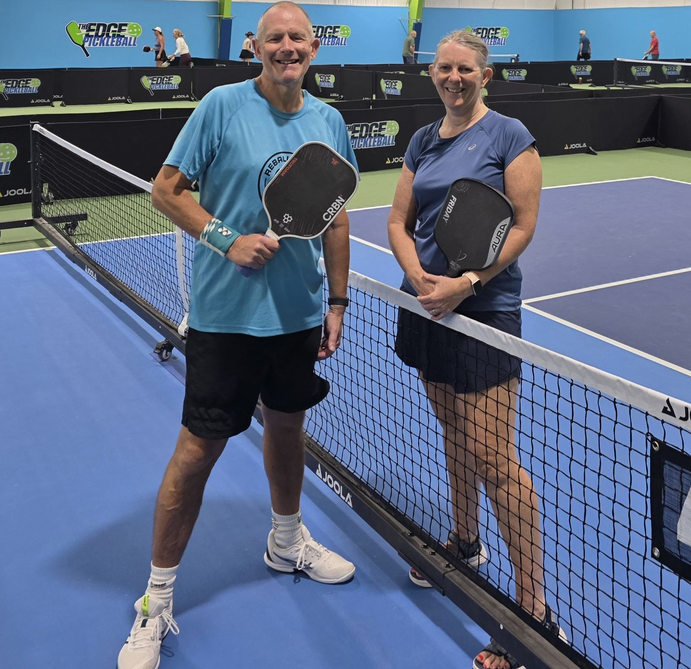
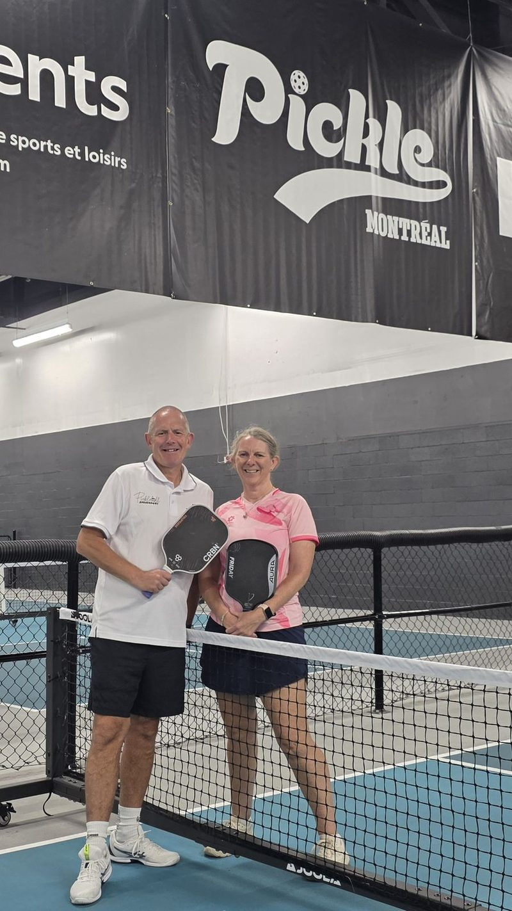
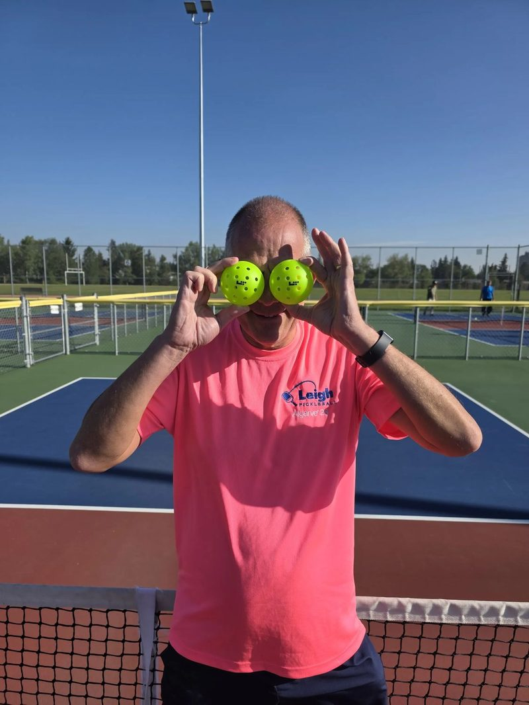
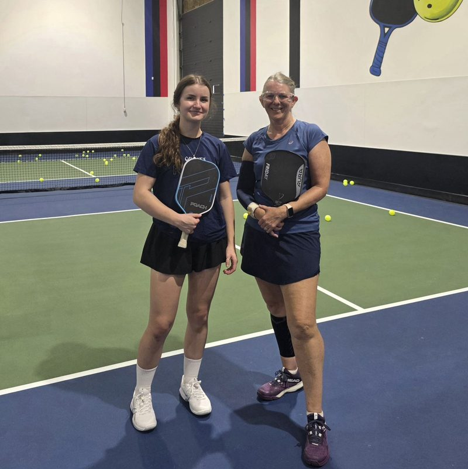

Two paddles, one carry-on, and a habit of finding the best pickleball in every city we land in. We play, we film every match, and we run it through AI to see what the footage won't tell you at first glance.

Every stop gets the same treatment: find the local players, get on court, roll camera, and break the tape down afterward.
The brand rests on three habits we don't skip, wherever we are in the world.

We build our route around pickleball, not the other way round — chasing the game to wherever the courts and the community are strongest.

Every match gets recorded, end to end. Not highlight clips — full games, so there's something real to study when we're done playing.

The footage goes through AI analysis after every session — shot patterns, positioning, what actually won or lost the point.
A running line of where the paddles have been. It only ever gets longer.
Scroll to see the full run — from Toronto to Wrexham, with a stack of stops across Southeast Asia, Turkey, Iberia, India and North America in between. Underlined stops have a short guide — tap the name.
Real courts, real details, from the stops we know best. More get added as we go.
Two parts to every stop: what we shoot, and what the AI finds in it afterward.
A fixed sideline camera runs for the full match — no editing mid-game, no cherry-picked rallies. It's the same setup whether we're on a rooftop court in Bangkok or a converted tennis court in Portugal.
Edmonton session with local coach Ava Weeks — one of many local players and coaches along the route.
Every recorded match gets run through AI analysis — shot selection, court coverage, where points are actually being won and lost. It's how the travel doubles as training.
Different scales, worth knowing: DUPR above is our official skill rating. The score below is PBVision's own AI assessment of one specific match.
Model's top growth signal from this game: speedups — only 20% of rallies finished with one were won. Dinks are the strong point, at 69% consistency.
Watch the full breakdown on PBVision →One match tells you how you played. Ten tell you what's actually going wrong — this is the third-shot data from our last 10 recorded games, Dave & Louise.
| Game | 3rds | Drops | Drop% | Drives | Drive% | Win% |
|---|---|---|---|---|---|---|
| 1 | 20 | 7 | 100% | 12 | 67% | 60% |
| 2 | 13 | 6 | 100% | 5 | 80% | 54% |
| 3 | 15 | 7 | 71% | 8 | 88% | 67% |
| 4 | 24 | 16 | 94% | 7 | 71% | 46% |
| 5 | 23 | 14 | 79% | 9 | 100% | 50% |
| 6 | 13 | 11 | 64% | 2 | 50% | 8% |
| 7 | 22 | 13 | 92% | 7 | 71% | 36% |
| 8 | 16 | 7 | 86% | 9 | 56% | 31% |
| 9 | 12 | 8 | 75% | 3 | 100% | 33% |
| 10 | 19 | 9 | 78% | 5 | 80% | 47% |
| Total | 177 | 98 | 84% | 67 | 76% | 44% |
Key takeaway: rally win% falls off a cliff from Game 6 on (8–36%), even though third-shot execution stays strong (65–100%) the whole way through. The third shot isn't the leak — it's the transition after it.
Clubs, brands, and gear makers along the route — here's what working together looks like.
A featured stop on the route: real match footage, an AI-analyzed breakdown, and a shoutout to your court, club, or gear — shared with a following that spans continents, not just one city's scene. No staged content, we actually play there.
Reach out before we're in your city, or before your product ships out. We work out what a feature looks like around the stops already on the route — a match, a clinic, a gear review, whatever fits.